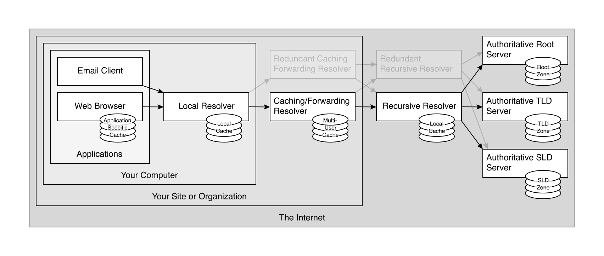

참고한 것들
Iterative vs Recursive
- 일단 client 가 DNS query 를 날리면 이것은 Resolver 에게로 날라간다.
- 여기서 resolver 가 취할 수 있는 방법은 두 가지 이다: Iterative 한 방법과 Recursive 한 방법.

- 위 그림이 이 두 가지 방식을 나타내고 있다.
- 두 방법의 가장 큰 차이점은 누가 물어보는지에 있다.
- Iterative 는 “너가 (요청한 놈이) 직접 물어봐” 의 방식이고
- Recursive 는 “내가 (요청받은 놈이) 대신 물어봐 줄게” 의 방식이라고 생각하면 된다.
- 위의 그림을 곁들여서 좀 더 살펴보자.
- Iterative 에서는
- Local DNS server 가 Root DNS server 에 물어봤을 때에 Root DNS server 는 “난 모르니 이놈 (TLD DNS server) 에게 너가 직접 물어봐” 라고 답변받을 것이다.
- 그래서 Local DNS server 는 TLD DNS server 에 물어보고, 또 다른 ”너가 직접 물어봐” 의 상황이 반복되어 결과를 받아온다고 볼 수 있다.
- 반면에 Recursive 에서는
- Local DNS server 가 Root DNS server 에 물어봤을 때 Root DNS server 가 “난 모르는데 내가 대신 물어봐 줄게” 라고 하며 TLS DNS server 에 물어보게 되고
- 이런 과정이 반복되어 결과를 받아오게 되는 것이다.
DNS Resolve
Iterative + Recursive
- 실제 DNS 처리 과정에서는 위 두 방식을 섞어서 사용한다.
- 순서를 보자면, 위 그림의 왼쪽 (Iterative Query) 과 동일하다.
- 그럼 Iterative 만 사용하는 것 아닌가?? 라고 생각할 수 있는데,
- 위 그림의 Iterative Query 에서 Requesting Host 와 Local DNS server 사이에서는 Recursive 하게 이루어 지고 있는 것을 볼 수 있다.
- Requesting Host 가 Local DNS server 에 물어봤을 때 Local DNS server 가 ”너가 물어봐” 가 아닌 ”내가 물어볼게” 의 자세를 취하고 있기 때문.
- 즉, Resolver 들은 Recursive 하게 작동하며 자신이 종결된 응답을 받아 요청한 놈에게 전달하게 되고
- Root / TLD / Sub-namespace authoritative nameserver 들에게 물어보는 과정에서는 Iterative 하게 작동하며 종결된 응답이 아닌 응답을 얻을 수 있는 방법을 전달하게 되는 것.
좀 더 구체적인 과정..

{kind=link}
- 일단 Email 이나 Web browser 에서 DNS query 를 하게 되면,
- 우선 해당 컴퓨터 내의 Local Resolver 가 받아서 처리한다.
- 여기서는 컴퓨터 내의 dns cache 를 수행하고,
- cache 에 없으면 외부로 query 를 proxy 한다.
- 뭐 systemd-resolved 같은 애들이 이것의 일종이라고 할 수 있다.
- Stub 이라고도 한다.
- 그리고 그 다음에는 Caching/Forwarding Resolver 가 받아서 처리하게 되는데,
- 얘는 뭐 사내 DNS 백업처럼 해당 기관 내에서의 DNS cache 를 해주는 놈이다.
- 다음에는 Recursive Resolver 가 받아서 처리한다.
- 여기까지 오는 과정이 Recursive 하게 이루어지게 되고, 이후부터는 이 Recursive Resolver 가 Iterative 하게 각 Authoritative Server 에 물어보며 결과를 받아온다.